2026-08-03. Same viewpoints, same scenes, same harness as the r185 board
(tools/three_shots.mjs against docs/qa/three-upgrade/shots.json), so this strip chains
to that one. BEFORE is HEAD before this lane; AFTER is HEAD after it. Numbers from
tools/shot_compare.mjs. Toggle everything with ?postfx=off.
ow-*, emb-townwalk) get the whole thing:
RenderPass → GTAO → aerial split → bloom → OutputPass, on 4× multisampled half-float buffers.emb-*, del-*) get nothing. The composer is never built and
those five frames are bit-for-bit what they were. Two reasons, either sufficient — see
what we rejected.Nothing in this game has ever had any. The real-time scenes are honest geometry under a solved key with no baked lighting, so a pavilion post, a cottage sill and a box all met the ground on a hard albedo seam. Look at the character's feet, the crate on the left, the paving slabs on the right, and the cobbles in the plaza — which were not visible at all before.
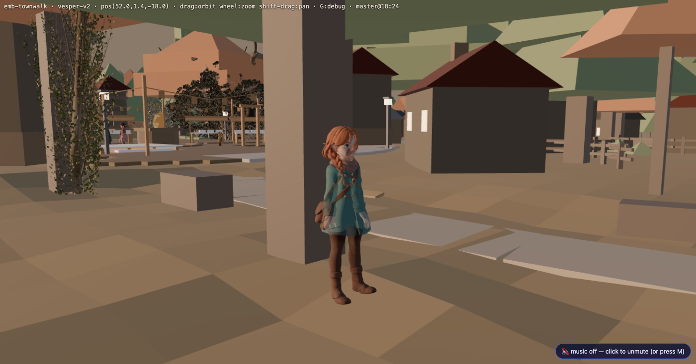
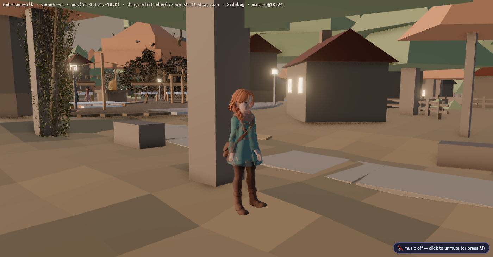
L05 0.175 → 0.166 · L50 0.424 → 0.415 · chroma 0.149 → 0.153. She is standing on the ground rather than in front of it. The frame gets slightly darker because contact shadow is, correctly, darkness that was not there.
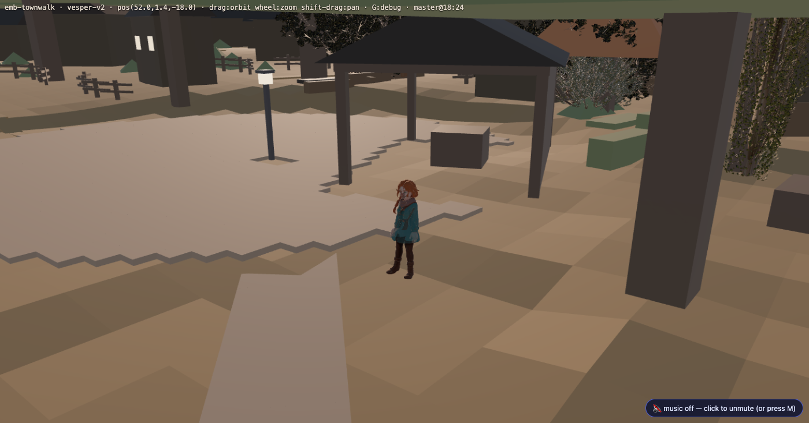
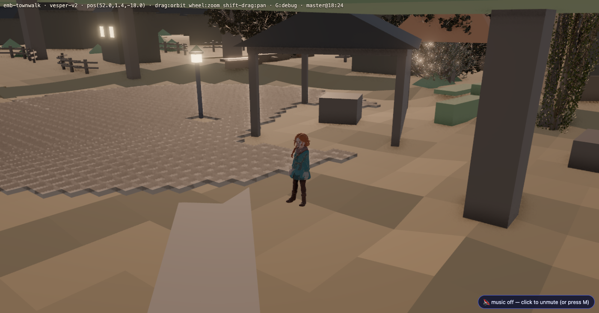
L05 0.171 → 0.144 · L50 0.431 → 0.412 · L95 0.586 → 0.518 · chroma 0.128 → 0.132. The biggest single change in the set: the cobbled plaza on the left is geometry that was already there and could not be seen. The pavilion posts, the lamp foot and the crates all acquire footprints.
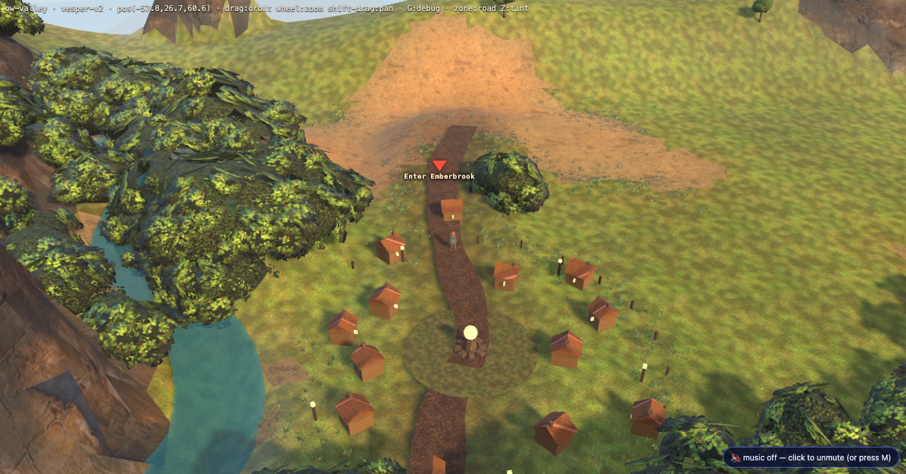
L05 0.237 → 0.238 · L50 0.473 → 0.484 · chroma 0.221 → 0.218. Cottage windows and the square's fire now read as light sources, and the near clearing separates warm from the cool far meadow. Bloom threshold is 0.99 on purpose — see the rejected frame below.
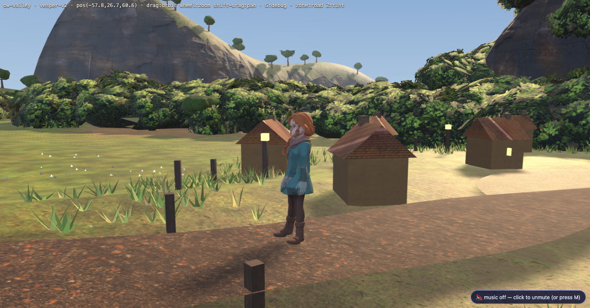
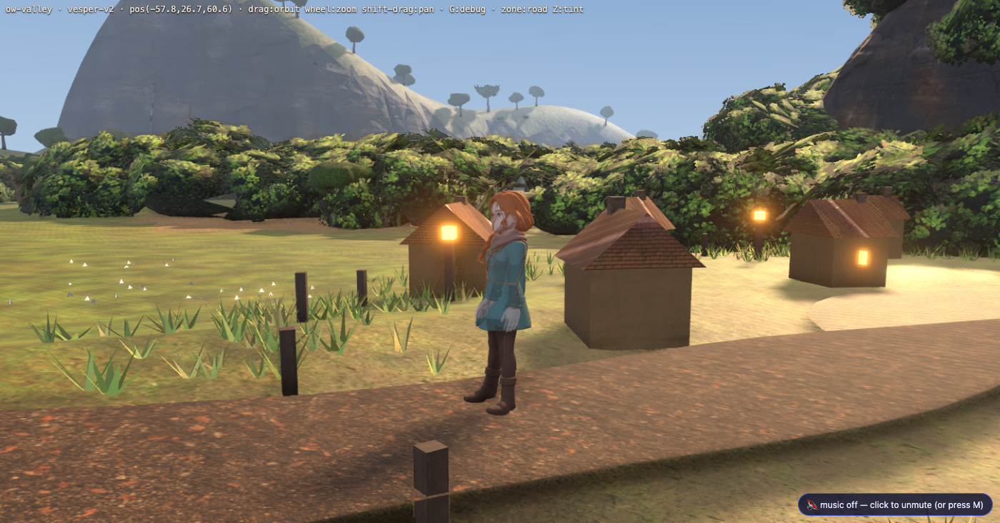
L05 0.168 → 0.179 · L50 0.421 → 0.427 · chroma 0.096 → 0.125 (+30%). The largest chroma gain in the set, and it is the one the overworld-art lane asked for.
Our four ow-* cameras are fixed high and looking down, so a shipped frame has no horizon and no
sky to tint: the usual "cool the far background" move has nothing to act on. The content lane measured that
naive distance fog is the wrong tool — it goes milky long before it goes blue, and dropped far-band saturation
below the references' own floor. This pass does the other thing instead: a multiplicative warm/cool tint by
radial distance (view position reconstructed from GTAO's own depth buffer, so the cue radiates from the
character rather than running up the screen the way Fog's -mvPosition.z does). Hue separates;
luminance and local contrast stay where the art direction put them. The shipped fog (34/205) is untouched.
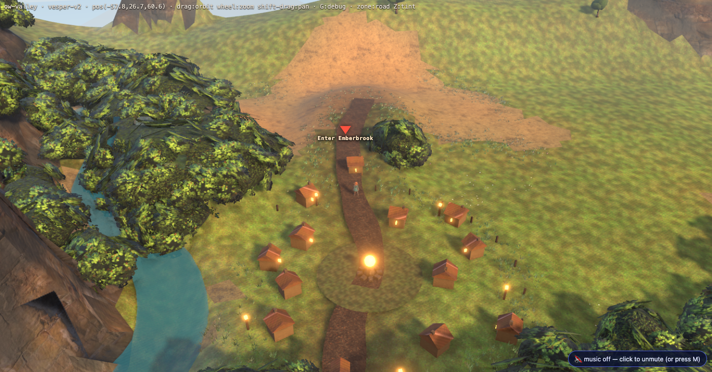
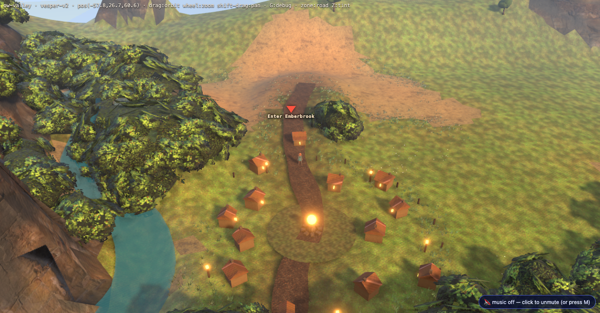
Near-patch minus far-patch red-blue difference (the warm-near / cool-far split):
12.9 → 29.5 on ow-corridor, 19.5 → 26.3 on ow-corridor-turn.
Knobs: ?grade=0..1 amount, ?grade_k tint strength, ?grade_n/?grade_f the distance ramp.
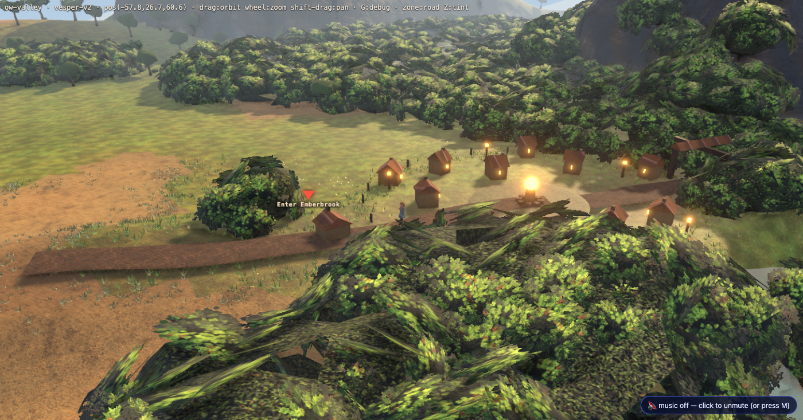
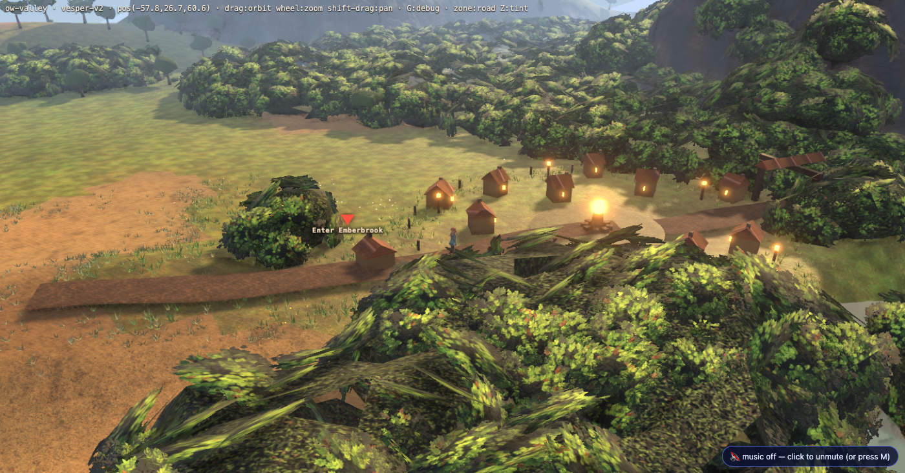
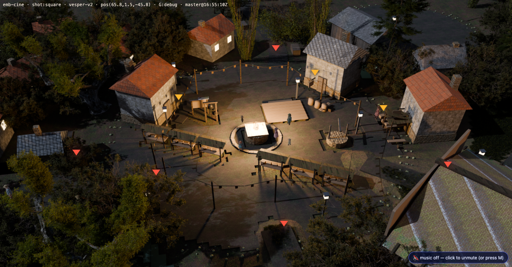
L05 0.014 → 0.014 · L50 0.153 → 0.153 · L95 0.498 → 0.498 · chroma 0.090 → 0.090. All five plate frames are identical to three decimals. That is the deliverable, not a miss.
three r185 turns material-level tone mapping off whenever the destination is a render target
(WebGLPrograms.js), because the composer's OutputPass is meant to apply the curve at the end.
But the plate does not arrive through a material — it is scene.background, and this page deliberately
strips #include <tonemapping_fragment> out of ShaderLib.background so a plate baked
through Blender's AgX is not graded twice. Under a composer that exemption is lost.
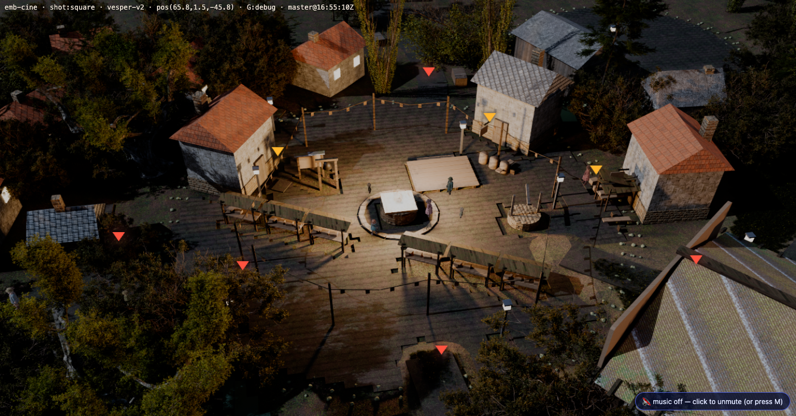
L05 0.014 → 0.000 (the toe crushes to true black), L50 0.153 → 0.133.
By eye it is worse than the numbers: the night reads as flat overcast dusk, the lamp pools lose their warmth
and their edges, and the foliage lifts. Screen-space AO on that frame would also be computed against
depth.png's reconstruction of a picture that already carries Cycles' own AO. Reproduce with
?postfx=all.
These scenes render with NoToneMapping, so nothing in them is HDR: the brightest ground is already
near 1.0 linear and the only things above it are emissive window panes, lamp heads and the square's fire.
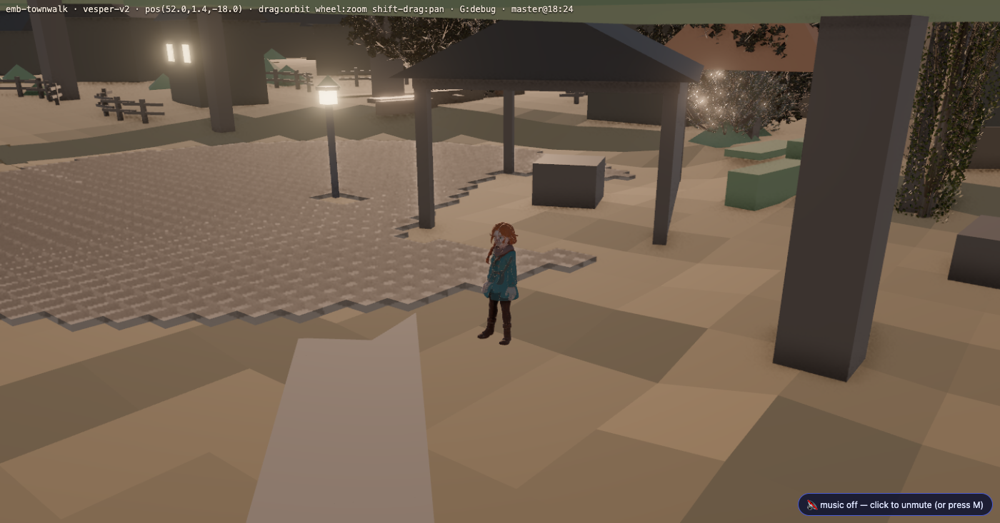
The aggregate barely moves (L05 0.144 → 0.157, L50 0.412 → 0.413) and that is the point: the percentile table cannot see this, and the picture can. The plaza hazes, the cobbles glow, the tree speckles. A difference table is not the instrument for a veiling glare.
new WebGLRenderer({antialias:true}) asks the browser for a multisampled default framebuffer.
The moment the arena's four-pass grade landed, the scene started rendering into post.rt instead, and
that request bought nothing: every silhouette in the arena has been hard-aliased ever since, with the renderer
configured for antialiasing. One line — samples: 4 on the scene buffer.
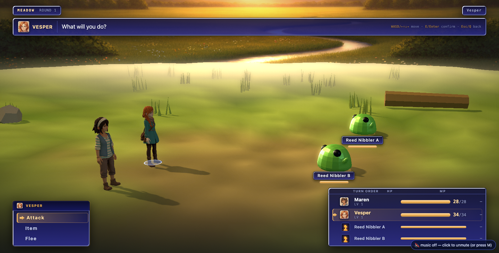
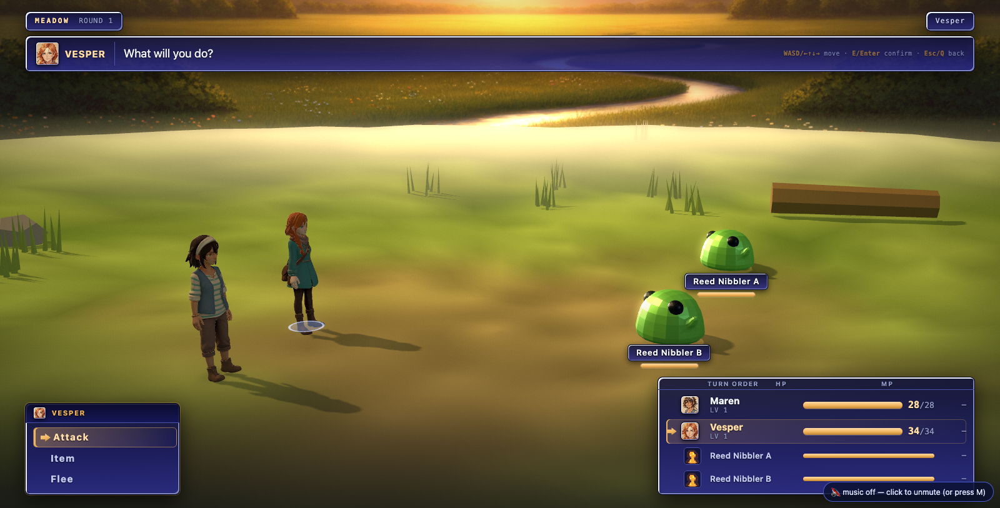
Mean horizontal edge energy 5.725 → 5.591 (−2.3%). Honest caveat: the arena scatters its
reeds and rocks per boot, so the two frames are not the same picture and the number is confounded by prop
count. The mechanism is not in doubt — the render target was allocated with samples unset — but this
instrument cannot isolate it.
Measured in the page, with a 1×1 gl.readPixels after every frame so the number includes GPU time
(a bare performance.now() around a draw call measures how fast the driver can queue work).
rAF median is the pipelined truth a player would feel; the forced-sync figure is the worst case.
| scene | forced-sync ms/frame | rAF median ms | GPU render targets | renderer textures |
|---|---|---|---|---|
| ow-valley | 3.9 → 5.0 (+1.1) | 8.3 → 8.3 (unchanged) | 0 → 129.9 MB | 40 → 59 |
| emb-townwalk | 20.1 → 29.9 (+9.8) | 16.0 → 16.8 | 0 → 129.9 MB | 97 → 116 |
Isolated at 1344×768: AO +8.4 ms, bloom +1.5 ms, the aerial split is inside the AO number (it reuses
GTAO's G-buffer and allocates nothing). AO runs at half resolution — at full res townwalk cost +12.0 ms
instead of +8.4, and the AO term is about to be blurred by its own denoiser anyway (?ao_res=1 restores it).
?pfx_msaa=2 takes the render targets from 129.9 MB to 82.7 MB and about 2 ms, at 2× instead of 4× MSAA.
The plate towns allocate none of this — the composer is disposed in sceneDispose(), which is also
what keeps renderer.info returning to its boot baseline for transition_test.
Ratio measured with a shadow mask taken from the engine's own shadow pass (the pixels that darken when
dl.castShadow is toggled) rather than from matched patches, so "shadowed" is not a guess.
scene.environmentIntensity = 0 takes shadowed ground from
90.2 → 55.8 and lit from 122.9 → 103.7 — ratio 1.36 → 1.86:1. The key contributes only 43/255 of a
lit pixel; the bounce contributes 7; the fog contributes nothing measurable (90.2 → 90.0 with
?owsky=0), so the floor is not being lifted by fog.window.__envTune(k, sunLevel), the documented live
surface for this fill, does not move it. Swept at k = 0.75 / 0.45 / 0.20 the shadowed ground sat at
90 / 90 / 91. scene.environmentIntensity is the knob that works.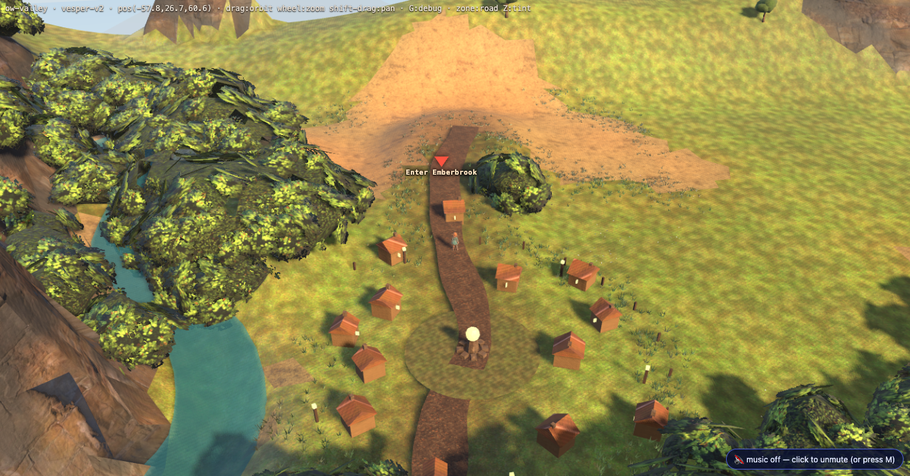
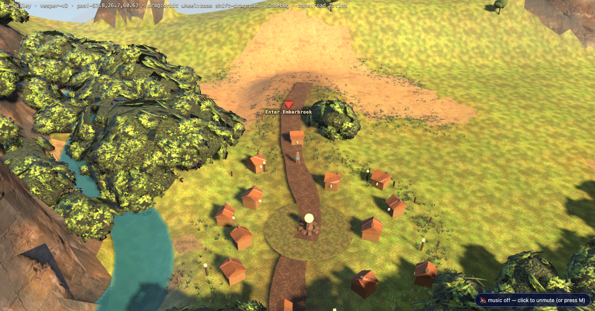
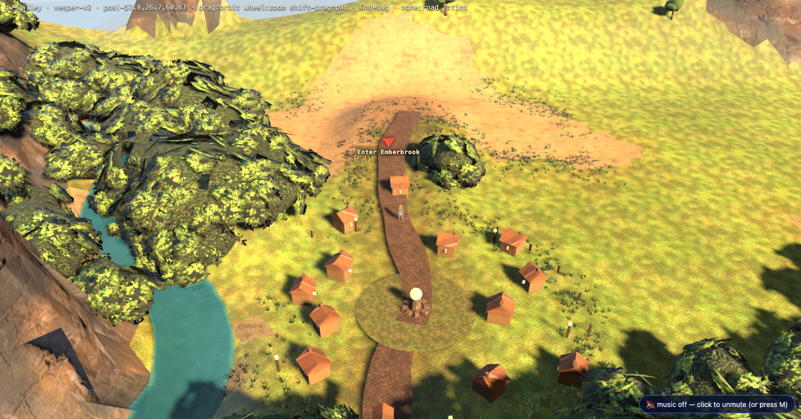
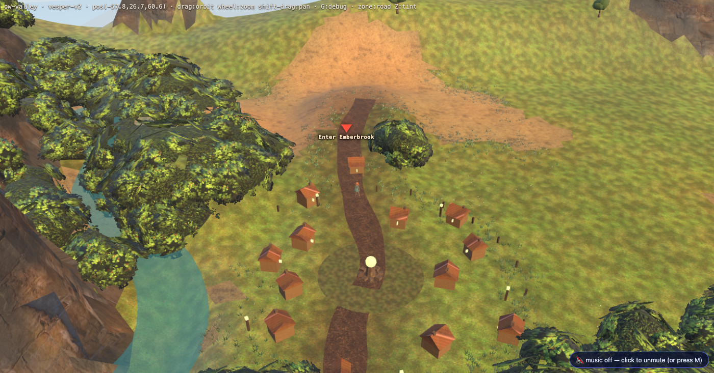
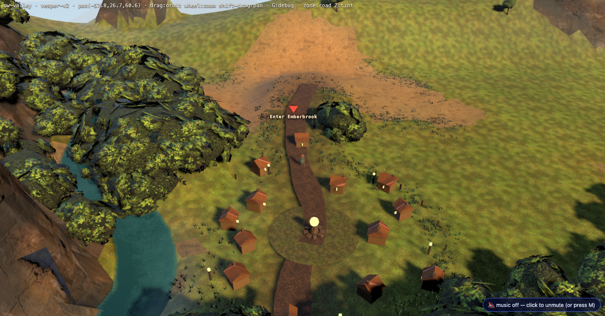
Nothing in this section is shipped. The overworld key is a user-ratified rig (THE OVERWORLD GOLDEN KEY, 2026-08-02) and re-cutting it at the end of an unrelated lane is not this lane's call. These are the measurements and the frames for whoever makes it.
playthrough_test 86/0 · transition_test 168/0 · cine_test 689/0 · slice_test 848/0 ·
findability_test 69/0 · seam_test --town emberbrook 177/2 known · dialogue_test 1493/2 known
(del.gullgirl, pre-existing). Depth occlusion is untouched by construction: the plate towns never
enter the composer.